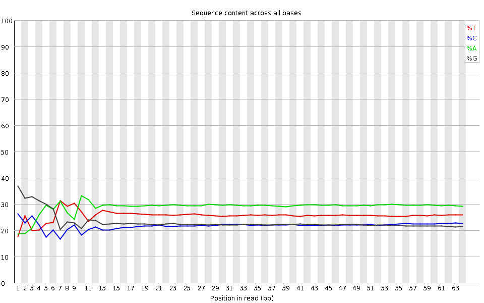
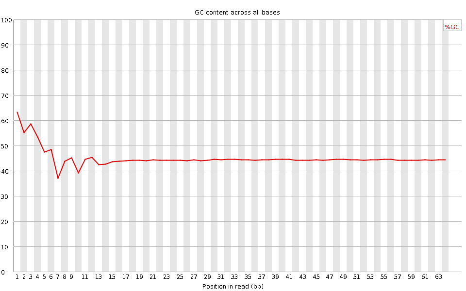
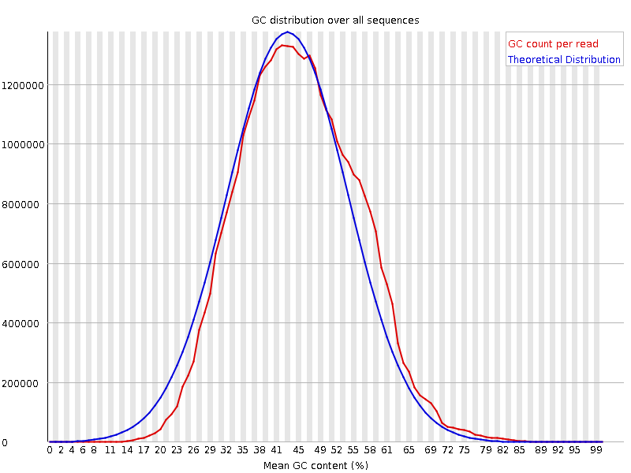
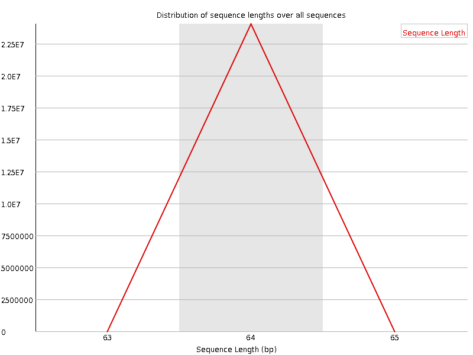
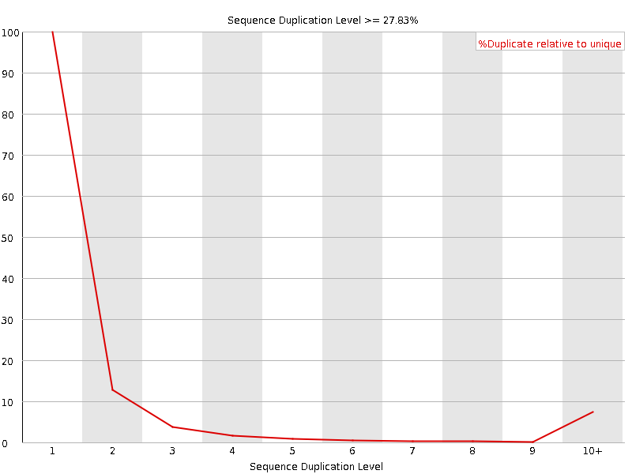
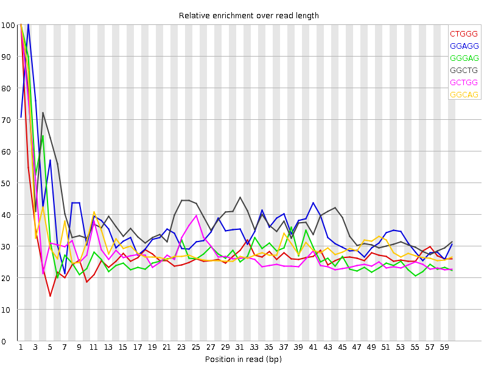

![[OK]](Icons/tick.png) Basic Statistics
Basic Statistics
| Measure | Value |
|---|---|
| Filename | SRR315306_pe_1.f.fastq |
| File type | Conventional base calls |
| Encoding | Sanger / Illumina 1.9 |
| Total Sequences | 24069901 |
| Filtered Sequences | 0 |
| Sequence length | 64 |
| %GC | 45 |
Per base sequence quality

Per sequence quality scores

![[WARN]](Icons/warning.png) Per base sequence content
Per base sequence content

![[FAIL]](Icons/error.png) Per base GC content
Per base GC content

Per sequence GC content

Per base N content

Sequence Length Distribution

Sequence Duplication Levels

Overrepresented sequences
No overrepresented sequences
Kmer Content

| Sequence | Count | Obs/Exp Overall | Obs/Exp Max | Max Obs/Exp Position |
|---|---|---|---|---|
| CTGGG | 2883570 | 2.8214417 | 10.2350235 | 1 |
| GGAGG | 3322045 | 2.7202833 | 7.519082 | 2 |
| GGGAG | 3168060 | 2.5941913 | 8.874128 | 1 |
| GGCTG | 2486560 | 2.4329855 | 6.277567 | 1 |
| GCTGG | 2375500 | 2.3243184 | 8.056397 | 1 |
| GGCAG | 2449385 | 2.1234164 | 6.8769145 | 1 |
| TGGGA | 2853415 | 2.105946 | 5.301518 | 2 |
| GGGGA | 2309940 | 1.891513 | 9.913751 | 1 |
| GGGAA | 2877120 | 1.8813857 | 5.7475014 | 1 |
| GCCAG | 2036450 | 1.8690522 | 5.2215424 | 1 |
| GTGGG | 2002950 | 1.8511479 | 9.582216 | 1 |
| GGGGG | 1801685 | 1.847465 | 12.4670315 | 2 |
| TGGGG | 1981925 | 1.8317164 | 8.200336 | 1 |
| GGCCA | 1901220 | 1.744938 | 5.180792 | 1 |
| GGGCA | 1935305 | 1.6777513 | 6.235309 | 1 |
| GGGTG | 1728255 | 1.5972719 | 6.094523 | 2 |
| GGGGT | 1675355 | 1.5483813 | 8.835548 | 3 |
| GGGCT | 1432460 | 1.4015968 | 5.6684794 | 3 |
| GGGGC | 1224330 | 1.3291236 | 6.608002 | 2 |
| GTGGA | 1560535 | 1.1517435 | 5.1540565 | 1 |
| GGGTT | 1352850 | 1.1269234 | 5.569518 | 3 |
| CGGGG | 960460 | 1.0426682 | 10.724242 | 1 |
| GGCGG | 812420 | 0.88195705 | 5.76645 | 1 |
| GCGGG | 713870 | 0.77497196 | 6.155635 | 1 |